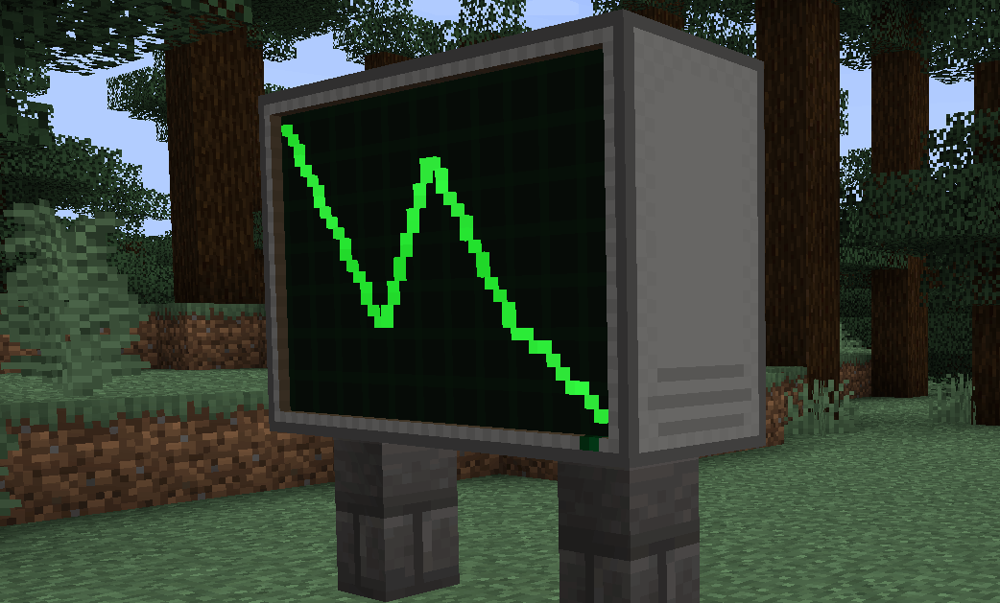

Simple Display documentation
Introductions
The Simple Display is a large fun multi block graphical display!

When multiple units are placed together they will merge to form a larger display, from the perspective of a computer they are all one peripheral, will appear as one peripheral, and will work the same but with a larger screen size. They also use the Projector API, and return its functions as its peripheral.
You can also shift click the display with an empty hand to clear it, unless disabled in mod settings.
The Simple Display is categorized as "neetcomputers:simple_display" in the IO APILookup table (copied from projector API because they are the same)
| clear() | Wipes the display buffer |
| draw() | Updates the display |
| getSize() | Gets the display's size |
| drawPixel(x, y) | Draws a pixel to the display buffer |
| drawLine(x1, y1, x2, y2) | Draws a line to the display buffer |
| drawRec(x1, y1, x2, y2) | Draws a rectangle to the display buffer |
Functions in detail
clear()
Clears the display buffer
Parameters: None Returns: Nonedraw()
Updates the display to match the display buffer
Parameters: None Returns: NonegetSize()
Gets the size of the display
Parameters: None Returns: Int, IntdrawPixel(x, y)
Draws a pixel to the display buffer
Parameters: X[Integer], Y[Integer] Returns: NonedrawLine(x1, y1, x2, y2)
Draws a line between the two points to the display buffer
Parameters: X1[Integer], Y1[Integer], X2[Integer], Y2[Integer] Returns: NonedrawRec(x1, y1, x2, y2)
Draws a solid rectangle between the two points to the display buffer
Parameters: X1[Integer], Y1[Integer], X2[Integer], Y2[Integer] Returns: None